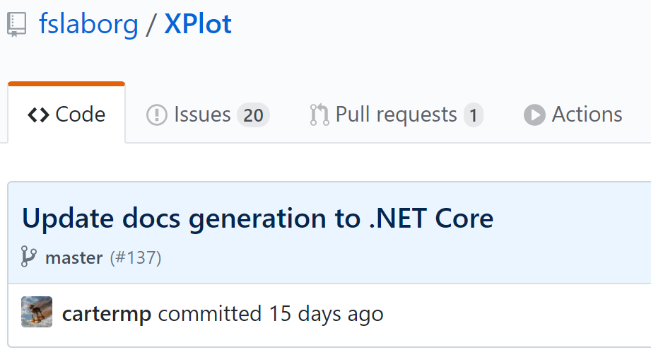

or how I updated our buildchains with alot of trial and error
Kevin Schneider, 4/15/2020
It all started with young and naive me browsing FsProjects libraries like we all sometimes do, and BAM, there it was in all of its glory:

No big announcements on FSharp.Formatting, no big update to project scaffold, just this commit using a preview version of FSharp.Formatting that did what we all want to do since late 2018.
So i went ahead and copied everything like a good programmer, ran in a lot of errors on the way and finally made it so that you dont have to.
On the way I also upped our game of FAKE 5.
So here it is, a current (mid April 2020) summary of the dotnet core buildchain for F# projects.
This is a rather simple one. using a tool manifest for local dotnet cli tools, we can make sure that the much needed
fake-cli and paket tools are always present before even starting to build things.
We can add tool manifests with dotnet new tool-manifest in the project root. Adding and updating tools is now as simple as dotnet tool install fake-cli and dotnet tool update fake-cli(Note that in both cases there is no -g argument).
Here is an example of the tool manifest file (you can find it per default under ./.config if you use dotnet new tool-manifest):
1:
2:
3:
4:
5:
6:
7:
8:
9:
10:
11:
12:
13:
14:
15:
16:
17:
18:
|
{
"version": 1,
"isRoot": true,
"tools": {
"fake-cli": {
"version": "5.19.1",
"commands": [
"fake"
]
},
"paket": {
"version": "5.243.0",
"commands": [
"paket"
]
}
}
}
|
By requiring certain .Net core SDK versions, we can further reduce potential errors during build:
executing dotnet new global.json --sdk-version 3.1.200 --roll-forward minor in the project root will create this global.json file:
1:
2:
3:
4:
5:
6:
|
{
"sdk": {
"version": "3.1.200",
"rollForward": "minor"
}
}
|
wich will require at least .NET Core SDK 3.1.200 and allowing versions with a higher minor version number (e.g. 3.1.201 or 3.2.000)
FAKE already supports a preview F# language feature: in script paket dependencies. Thzis also means that there is no need for a build group in the paket.dependencies file, which in turn is a bit more clean.
just add this string on top of your buildscript:
1:
2:
3:
4:
5:
|
#r "paket:
nuget BlackFox.Fake.BuildTask
nuget Fake.Core.Target
nuget SomeMorePackages //" //the trailing // in the string are important so this works on Linux
#load ".fake/build.fsx/intellisense.fsx"
|
The different build configurations of BioFSharp are a nightmare. There are some projects that can target only net45, net47, or both and also netstandard2.0.
So this results in basically 3 build processes, one for netfx, one for netstandard 2.0 and one for .NET core. This is especially confusing to realize in FAKE for two reasons:
Creating a dependency tree
1:
2:
3:
4:
|
"Cleanup"
==> "Build"
==> "RunTestsBuild1"
==> "Build1"
|
Is the same as
1:
2:
3:
|
"Cleanup" ==> "Build"
"Build" ==> "RunTestsBuild1"
"RunTestsBuild1" ==> "Build1"
|
Which means that you can't create alternate dependency trees starting from the "Build1" target without running everything else.
As a direct consequence of that, you have to create A LOT of dummy targets when you want to create different dependency trees and/or use the confusing ?=> operator for soft dependencies. This creates an sheer endless amount of strings on the end of the build.fsx file that is a nightmare to debug.
Enter BlackFox.Fake.BuildTask, a strongly typed Target alternative for FAKE.
Targets are now typed (so you have intellisense and autocompletion for them) and you have a much clearer structure enforce in your build.fsx as you have to write BuildTasks below the ones they depend on.
Soft dependencies can be created using the IfNeeded field of the BuildTask, which means that When y is in the build chain, x has to be executed before it, if x is also in the chain :
1:
2:
3:
4:
5:
6:
7:
8:
9:
|
let y = BuildTask.createEmpty "y" []
let z = BuildTask.createEmpty "z" [y.IfNeeded]
// A task that needs z to be done and should run after y
// if y is in the build chain
let build = BuildTask.create "x" [y.IfNeeded; z] {
// ...
()
}
|
Now we can create two buildchains:
1:
2:
3:
4:
5:
|
let buildChainA =
BuildTask.createEmpty "buildChainA" [y;build]
let buildChainB =
BuildTask.createEmpty "buildChainB" [build]
|
Where in case of buildChainA the running order is:
y (Because it is in the buildchain, it needs to be run before z)z (It needs to be run befor build as a hard dependency)buildbuildChainA (our dummy target for the chain)
And for buildChainB:
z (It needs to be run before build as a hard dependency, note that y is not run as it is not in the chain)buildbuildChainB (our dummy target for the chain)
This is the big one. Just as back in the old days, we are able to generate docs using two FSharp.Formatting scripts (instead of the command line tool):
- generate.fsx which contains the logic how to build documentation
- formatters.fsx which contains custom formatters on how to format specific constructs (We use this for displaying Plotly Charts).
The BuildTask to run these scripts starts a fsi instance that executes these scripts:
1:
2:
3:
4:
5:
6:
7:
8:
9:
10:
11:
|
let generateLocalDocumentation =
BuildTask.create "generateLocalDocumentation" [cleanDocs] {
let result =
DotNet.exec
(fun p -> { p with WorkingDirectory = __SOURCE_DIRECTORY__ @@ "docsrc" @@ "tools" })
"fsi"
"--define:REFERENCE --define:HELP --exec generate.fsx"
if not result.OK then
failwith "error generating docs"
}
|
Here is a quick walkthrough:
Here is the important part of formatters.fsx, that registers a transformation fot the GenericChart.GenericChart type
1:
2:
3:
4:
5:
6:
7:
8:
9:
10:
11:
12:
13:
14:
15:
16:
|
/// Builds FSI evaluator that can render System.Image, F# Charts, series & frames
let createFsiEvaluator root output =
let transformation (value:obj, typ:System.Type) =
match value with
| :? GenericChart.GenericChart as ch ->
// Just return the inline HTML for a Plotly chart
let html = GenericChart.toChartHtmlWithSize 700 500 ch
Some [InlineBlock (html,None)]
| _ -> None
// Create FSI evaluator, register transformations & return
let fsiEvaluator = FsiEvaluator()
fsiEvaluator.RegisterTransformation(transformation)
fsiEvaluator
|
This script is a little more complex. You define a lot of metadata about the project and then execute this function:
1:
2:
3:
4:
5:
6:
7:
8:
9:
10:
11:
12:
13:
14:
15:
16:
17:
18:
19:
20:
21:
22:
23:
24:
25:
26:
|
// Build documentation from `fsx` and `md` files in `docsrc/content`
let buildDocumentation () =
printfn "building docs..."
let subdirs = [ content, docTemplate ]
//This line registers the formatter from formatters.fsx
let fsiEvaluator = createFsiEvaluator root output
for dir, template in subdirs do
let sub = "." // Everything goes into the same output directory here
let langSpecificPath(lang, path:string) =
path.Split([|'/'; '\\'|], System.StringSplitOptions.RemoveEmptyEntries)
|> Array.exists(fun i -> i = lang)
let layoutRoots =
let key = layoutRootsAll.Keys |> Seq.tryFind (fun i -> langSpecificPath(i, dir))
match key with
| Some lang -> layoutRootsAll.[lang]
| None -> layoutRootsAll.["en"] // "en" is the default language
RazorLiterate.ProcessDirectory
( dir, template, output + "/" + sub, replacements = ("root", root)::info,
layoutRoots = layoutRoots,
generateAnchors = true,
processRecursive = false,
includeSource = true,
fsiEvaluator = fsiEvaluator
)
|
but most of this code was already present, just in build.fsx instead. Turns out migrating (including the points above) is a matter of half an hour if you know what to do, which you should after reading this post.
All of this however is most likely subject to change in the pretty near future, but we waited so long and I think the tools are now in a good state to migrate once again.
Now that we have local tools, we can restore them just like packages using dotnet tool restore. This ensures that the tools with the exact version are present before starting the build.
Here are the two main entry points for building our projects, using all of the above:
1:
2:
3:
4:
5:
6:
7:
8:
9:
10:
11:
|
@echo off
cls
#restore local tools needed for the project (see tool-manifest)
dotnet tool restore
#restore packages as defined in paket.lock
dotnet paket restore
#execute the buildscript with optionally passing target parameters
dotnet fake build %*
|
1:
2:
3:
4:
5:
6:
7:
8:
9:
10:
11:
12:
|
#!/usr/bin/env bash
set -eu
set -o pipefail
#restore local tools needed for the project (see tool-manifest)
dotnet tool restore
#restore packages as defined in paket.lock
dotnet paket restore
#execute the buildscript with optionally passing target parameters
dotnet fake build "$@"
|
Multiple items
namespace FSharp
--------------------
namespace Microsoft.FSharp
namespace FSharp.Literate
namespace FSharp.Markdown
namespace FSharp.Plotly
namespace Fake
namespace Fake.Core
module TargetOperators
from Fake.Core
namespace BlackFox
namespace BlackFox.Fake
namespace FSharp.Formatting
namespace FSharp.Formatting.Razor
val y : BuildTask.TaskInfo
module BuildTask
from BlackFox.Fake
val createEmpty : name:string -> dependencies:BuildTask.TaskInfo list -> BuildTask.TaskInfo
val z : BuildTask.TaskInfo
property BuildTask.TaskInfo.IfNeeded: BuildTask.TaskInfo with get
val build : BuildTask.TaskInfo
val create : name:string -> dependencies:BuildTask.TaskInfo list -> BuildTask.TaskBuilder
val buildChainA : BuildTask.TaskInfo
val buildChainB : BuildTask.TaskInfo
val generateLocalDocumentation : BuildTask.TaskInfo
val result : obj
val not : value:bool -> bool
val failwith : message:string -> 'T
val createFsiEvaluator : root:'a -> output:'b -> FsiEvaluator
Builds FSI evaluator that can render System.Image, F# Charts, series & frames
val root : 'a
val output : 'b
val transformation : (obj * System.Type -> MarkdownParagraph list option)
val value : obj
type obj = System.Object
val typ : System.Type
namespace System
type Type =
inherit MemberInfo
member Assembly : Assembly
member AssemblyQualifiedName : string
member Attributes : TypeAttributes
member BaseType : Type
member ContainsGenericParameters : bool
member DeclaringMethod : MethodBase
member DeclaringType : Type
member Equals : o:obj -> bool + 1 overload
member FindInterfaces : filter:TypeFilter * filterCriteria:obj -> Type[]
member FindMembers : memberType:MemberTypes * bindingAttr:BindingFlags * filter:MemberFilter * filterCriteria:obj -> MemberInfo[]
...
module GenericChart
from FSharp.Plotly
type GenericChart =
| Chart of Trace * Layout * Config
| MultiChart of Trace list * Layout * Config
val ch : GenericChart.GenericChart
val html : string
val toChartHtmlWithSize : width:int -> height:int -> gChart:GenericChart.GenericChart -> string
union case Option.Some: Value: 'T -> Option<'T>
union case MarkdownParagraph.InlineBlock: code: string * range: Common.MarkdownRange option -> MarkdownParagraph
union case Option.None: Option<'T>
val fsiEvaluator : FsiEvaluator
Multiple items
type FsiEvaluator =
interface IFsiEvaluator
new : ?options:string [] * ?fsiObj:obj -> FsiEvaluator
member RegisterTransformation : f:(obj * Type -> MarkdownParagraph list option) -> unit
member EvaluationFailed : IEvent<FsiEvaluationFailedInfo>
--------------------
new : ?options:string [] * ?fsiObj:obj -> FsiEvaluator
member FsiEvaluator.RegisterTransformation : f:(obj * System.Type -> MarkdownParagraph list option) -> unit
val buildDocumentation : unit -> unit
val printfn : format:Printf.TextWriterFormat<'T> -> 'T
val subdirs : (string * string) list
val dir : string
val template : string
val sub : string
val langSpecificPath : (string * string -> bool)
val lang : string
val path : string
Multiple items
val string : value:'T -> string
--------------------
type string = System.String
System.String.Split([<System.ParamArray>] separator: char []) : string []
System.String.Split(separator: string [], options: System.StringSplitOptions) : string []
System.String.Split(separator: string,?options: System.StringSplitOptions) : string []
System.String.Split(separator: char [], options: System.StringSplitOptions) : string []
System.String.Split(separator: char [], count: int) : string []
System.String.Split(separator: char,?options: System.StringSplitOptions) : string []
System.String.Split(separator: string [], count: int, options: System.StringSplitOptions) : string []
System.String.Split(separator: string, count: int,?options: System.StringSplitOptions) : string []
System.String.Split(separator: char [], count: int, options: System.StringSplitOptions) : string []
System.String.Split(separator: char, count: int,?options: System.StringSplitOptions) : string []
type StringSplitOptions =
| None = 0
| RemoveEmptyEntries = 1
field System.StringSplitOptions.RemoveEmptyEntries: System.StringSplitOptions = 1
module Array
from Microsoft.FSharp.Collections
val exists : predicate:('T -> bool) -> array:'T [] -> bool
val i : string
val layoutRoots : string list
val key : string option
Multiple items
module Seq
from FSharp.Plotly
--------------------
module Seq
from Microsoft.FSharp.Collections
val tryFind : predicate:('T -> bool) -> source:seq<'T> -> 'T option
type RazorLiterate =
private new : unit -> RazorLiterate
static member ProcessDirectory : inputDirectory:string * ?templateFile:string * ?outputDirectory:string * ?format:OutputKind * ?formatAgent:CodeFormatAgent * ?prefix:string * ?compilerOptions:string * ?lineNumbers:bool * ?references:bool * ?fsiEvaluator:IFsiEvaluator * ?replacements:(string * string) list * ?includeSource:bool * ?layoutRoots:string list * ?generateAnchors:bool * ?assemblyReferences:string list * ?processRecursive:bool * ?customizeDocument:(ProcessingContext -> LiterateDocument -> LiterateDocument) -> unit
static member ProcessDocument : doc:LiterateDocument * output:string * ?templateFile:string * ?format:OutputKind * ?prefix:string * ?lineNumbers:bool * ?includeSource:bool * ?generateAnchors:bool * ?replacements:(string * string) list * ?layoutRoots:string list * ?assemblyReferences:string list -> unit
static member ProcessMarkdown : input:string * ?templateFile:string * ?output:string * ?format:OutputKind * ?formatAgent:CodeFormatAgent * ?prefix:string * ?compilerOptions:string * ?lineNumbers:bool * ?references:bool * ?replacements:(string * string) list * ?includeSource:bool * ?layoutRoots:string list * ?generateAnchors:bool * ?assemblyReferences:string list * ?customizeDocument:(ProcessingContext -> LiterateDocument -> LiterateDocument) -> unit
static member ProcessScriptFile : input:string * ?templateFile:string * ?output:string * ?format:OutputKind * ?formatAgent:CodeFormatAgent * ?prefix:string * ?compilerOptions:string * ?lineNumbers:bool * ?references:bool * ?fsiEvaluator:IFsiEvaluator * ?replacements:(string * string) list * ?includeSource:bool * ?layoutRoots:string list * ?generateAnchors:bool * ?assemblyReferences:string list * ?customizeDocument:(ProcessingContext -> LiterateDocument -> LiterateDocument) -> unit
static member RazorLiterate.ProcessDirectory : inputDirectory:string * ?templateFile:string * ?outputDirectory:string * ?format:OutputKind * ?formatAgent:FSharp.CodeFormat.CodeFormatAgent * ?prefix:string * ?compilerOptions:string * ?lineNumbers:bool * ?references:bool * ?fsiEvaluator:IFsiEvaluator * ?replacements:(string * string) list * ?includeSource:bool * ?layoutRoots:string list * ?generateAnchors:bool * ?assemblyReferences:string list * ?processRecursive:bool * ?customizeDocument:(ProcessingContext -> LiterateDocument -> LiterateDocument) -> unit